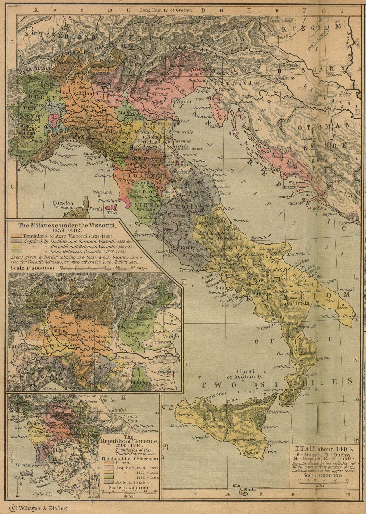

Produced and lead mainly by the maritime republic of
Genoa
---------------------------------
In the tumultous Europe of the mid-second millenium, North Italy managed to create an oasis of stability and development right in the middle of the chaos.

Genoa was a small city-state that established herself as a strategic commercial power. The Genoese, thanks to their skillful diplomatic manouvering and advanced maritime technology, developed a vast trading empire, stretching from the mouth of the Mediteranean in the west to Crimea in the Black sea in the east, with outposts even in the Atlantic coast.
The Genoese also managed to develop financial techniques, and in a pattern that, as well shall see, would be replicated by the other capitalist world empires, began to prioritise finance over it's other economic activities. The Genoese were instrumental in financing the other European powers of their day, particularly the Hapsburgs, and both parties relied on each other in their struggles to control trade and resources. However, with the decline of Hapsburg power in the 30 Years War, the Genoese ceased to be the drivers of capitalist accumulation, falling behind the Dutch